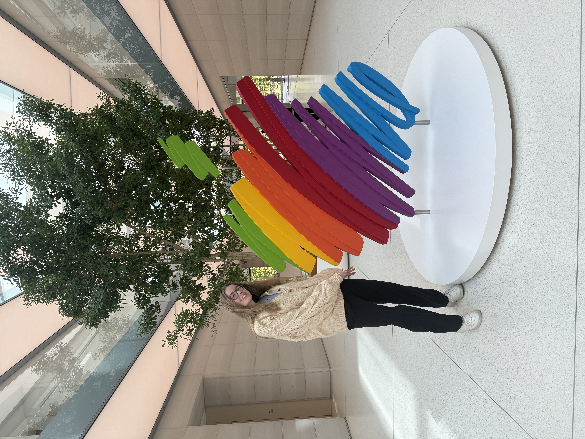

I work as a Data Scientist at Apple in Worldwide Product Marketing Finance, specializing in customer analytics — translating segmentation insights and accurate forecasts into clear, actionable narratives for executive and cross-functional audiences.
Having grown up in Chapel Hill, NC, I have always enjoyed living near a university. While attending Duke University for undergrad and Columbia University for my master's, I had the opportunity to pursue research and teaching alongside my studies. In undergrad, I worked with a research group analyzing long-term ecosystem data from the ELA (Experimental Lakes Area), and taught as an Undergraduate Teaching Assistant for STA 199 and CS 216. After all that school, I joined Apple full-time as a Data Scientist in Worldwide Product Marketing Finance.
Outside of work, I love to travel — some of my favorite destinations so far have been the UK, Costa Rica, Denmark, and Sweden. I love music and have been playing the cello for over 10 years.
Apple — Data Scientist (Oct. 2024 – Present)
Worldwide Product Marketing Finance
Apple — Data Engineer (Rotation) (Mar. – Sep. 2024)
Created a tool to recommend compute warehouses for Snowflake queries,
integrating ML models and APIs with existing Airflow pipelines.
Placed top 3 out of 150 intern groups in Apple’s iContest pitch competition.
Apple — Data Engineering Intern (May – Aug. 2023)
Teaching assistant for STA199 (Intro to Data Science) and CS216 (Everything Data).
Graded work, held office hours, led lab sections, and mentored students on projects.
Duke University — Undergraduate Teaching Assistant (Jan. 2021 – May 2022)
Supported migration from Qlik Sense to Microsoft Power BI for the Digital Transformations team.
Created a 30+ page Power BI report with fully functioning dashboards.
Won Best Overall Quality Award and Peers Choice Award for the Lenovo Incubator Project.
Lenovo — Data Visualization Intern (June – July 2021)
Developed an internal query tool for cross-referencing data across multiple databases,
owning both frontend and backend. Built in Java (Spring MVC), JavaScript, and SQL.
Amazon — SDE Intern (May – Aug. 2020)
As part of a class project, I investigated redistricting algorithms and built my own implementation.
Github repoA group project from my data visualization class — an R Shiny app that extracts colors from, simplifies, and creates an outline for any image.
Github RepoI volunteered as a data analyst supporting downballot political campaigns. Here is a blog post I wrote about the experience.
My blog postI'd love to hear from you.
Email me